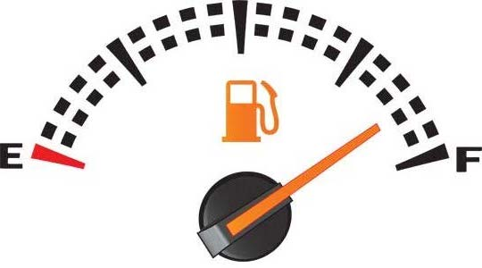
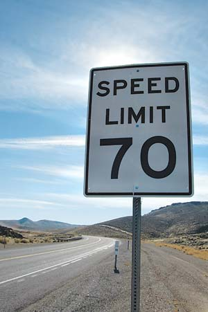
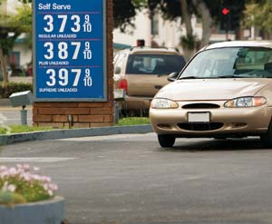

When Berkeley, Calif., resident Bradley Berman drives his 2006 Toyota Prius around town, the fuel economy indicator pushes into the low 40s. That’s a far cry from the number advertised for the gasoline-electric hybrid, so Berman’s disappointment is understandable.
He says, “When you see 60 mpg on the sticker for city driving, and you’re basically doing city driving but getting in the low-40s, you think ‘That’s terrible!’” Berman’s numbers improve on longer trips, but they still come up short compared to the official miles per gallon estimate for the Prius. Berman should know. As the founder and editor of HybridCars.com, he hears from numerous hybrid drivers across the country who share similar experiences.
For better or worse, hybrids have become the poster child for vehicles not living up to fuel economy expectations. That may be because hybrid drivers are theoretically more interested in saving oil and thus complain louder; because hybrids display real-time mpg results and thus their drivers are more aware of the results; or perhaps simply because, as the reigning mpg champ, they’re an easy target.
The truth, however, is that advertised fuel economies of all vehicles, including conventional models, have been slowly but steadily drifting from reality for more than two decades.
To remedy these inaccuracies, the U.S. Environmental Protection Agency (EPA) recently changed the way it calculates fuel economy estimates. The new math will first affect the numbers for model year 2008 vehicles. The results will be lower, more realistic city and highway mpg estimates that “help us capture the way Americans are driving now,” says EPA spokesperson John Millett.
Here’s a little perspective to help understand why the EPA made these changes. In the 1970s, the Agency developed tests designed to mimic city and highway driving conditions in a laboratory. The test results were posted on new vehicles, giving consumers valuable information during the ’70s energy crisis.
The results were also used for new fuel-efficiency requirements known as Corporate Average Fuel Economy, or CAFE. The federal standards, which still exist, require automakers to meet an average mpg for all cars and trucks they sell. While automakers can produce inefficient vehicles, they must also sell more efficient models to even out their fleet’s total average.
In 1985, the EPA began to reduce the results of its mpg equations by about 15 percent when it became apparent the tests no longer reflected real-world driving. Among other things, the tests did not include the use of air conditioning and speeds greater than 60 mph. Yet over the two decades since then, even more has changed. Today’s vehicles are substantially more powerful than those of yesterday and, as a result, people are driving more aggressively. They’re also driving faster, enabled by increases in highway speed limits across the nation. Vehicle amenities have also changed. For example, 20 years ago, energy-thirsty air conditioning was optional on vehicles; today it is all but ubiquitous. Because each of these changes lowers fuel economy, tests that neglect to factor them in give artificially inflated numbers.
With that in mind, the Agency’s most recent modification incorporates the results of three additional tests: cold conditions, use of air conditioning and high speed/aggressive driving. These tests, already conducted on vehicles to measure tailpipe exhaust, are now combined with the original city and highway driving tests to make a new “five-cycle” test that provides a more accurate assessment of fuel economy.
So what does the change mean to you and me? For city mpg, the EPA says the numbers of most conventional vehicles, including diesels, will drop between 8 percent and 15 percent. The city mpg for hybrids will decrease between 20 percent and 30 percent. The highway mpg of most vehicles will drop from 5 percent to 15 percent; the numbers for certain hybrids may decline between 10 percent and 20 percent. (For examples, see the chart below.)
Why are hybrids more susceptible to inflated mpg estimates? According to John German, manager of environmental and energy analysis with American Honda Motor Co., it has less to do with hybrid technology than with high-mpg designs. For starters, high-mpg vehicles have lower baseline fuel consumption. Thus, unlike muscle cars with oversized engines that offer additional horsepower on tap, high-mpg vehicles are more susceptible to mpg declines when they encounter higher loads, such as aggressive driving or the use of air conditioning. So by including these additional loads in the new math, German says, the results for hybrids and other efficient vehicles will be more heavily affected, even though their “increase” in fuel consumed with the new mpg estimates is no larger than the “increase” for other, less-efficient vehicles. And, Millett says, “you’re still going to get better mileage in a hybrid.”
Of course, the actual fuel economies of the vehicles aren’t changing at all. The new estimates that appear on window labels simply offer more accurate “truth in advertising.” This will help consumers in comparison shopping, and give them a more accurate idea of what their annual fuel costs would be with a specific vehicle.
The new numbers also won’t change fuel consumption, global warming emissions or even automakers’ federal mpg requirements. The math for CAFE regulations was set into law in the ’70s; the new math for fuel economy affects only what you see on window labels. Because of this, the new estimates will have no bearing on the auto industry’s mpg obligations.
Also bear in mind that the fine print “your mileage may vary” remains true, even with the new math. It is a near-impossible task for the EPA to simulate the driving styles and driving conditions of everybody, everywhere - Death Valley in the middle of summer is a far cry from Boston in the dead of winter. Where and how a vehicle is driven; condition and care of the vehicle; the type of tires; climate and weather conditions; and use of accessories such as air-conditioning are but a handful of factors that will uniquely alter any given vehicle’s real-world mpg.
Nevertheless, improving the accuracy of fuel economy labels is an important move, and another step toward increased public understanding of the extent of our country’s reliance on oil. The changes also highlight the vehicles most in need of improvement. While hybrids are fuel-thrifty and are becoming increasingly popular, the steady improvements of conventional cars and trucks would have a greater impact in reducing oil consumption and global warming emissions. The good news: there are a handful of new high-mpg models available, plus superefficient plug-in hybrids and all-electric cars are on the way.
Whether you’re buying a new car or nursing an ’89 Civic, there are numerous steps we all can take that will have real and lasting impacts, starting today. First, walk, bike or take mass transit whenever possible. Simply put, not driving is a significant way to save oil and money, and reduce your carbon footprint.
Second, for those necessary trips, change your driving behavior and keep your car “physically fit” through regular maintenance (see “How to Improve Your Fuel Economy,” below). And once you’ve made those changes, make fuel economy a game: The goals and rewards are to save money and reduce your consumption of oil and creation of greenhouse gases. The key is to monitor your vehicle’s mpg regularly. What causes it to go up or down? Does it change in different seasons? With different tires? Tracking your fuel economy will empower you to make a difference and save money - two reasons to feel good, even when you have to buy gas.
Third, when it comes time to shop for your next vehicle, seek out a model with the best available fuel economy. Even if you can’t make the leap to a hybrid, a handful of new conventional models (such as the Honda Fit and Toyota Yaris) are affordable and designed with efficiency in mind. If your needs lie elsewhere, remember that most traditional vehicles are available in a range of engine and transmission options. Smaller engines typically offer a few extra mpg over larger engines. Similarly, two-wheel-drive transmissions will usually do a little better than four-wheel-drive versions. Also, when possible, choose vehicle trims with fuel-efficient technologies such as continuously variable transmissions (CVT) and engines with cylinder deactivation. Furthermore, understand that even an incremental mpg improvement is nothing to sneer at, especially for vehicles with low fuel economies. Choosing a truck that averages 16 mpg rather than 14 mpg will save as much gasoline annually as opting for a 51 mpg car rather than a 35 mpg car.
Fourth, lead the “drive” for better mpg by contacting your congressional representatives and insisting on a meaningful increase in fuel economy standards. Point out that the numbers used for CAFE are a far cry from what we actually get on the road. Moreover, we’re long overdue for a significant mpg boost. Today’s average new vehicle is less efficient than the average new vehicle of 1982, in large part because fuel economy standards barely increased over the past couple decades.
Boosting CAFE standards has been a notoriously difficult sell in Washington. “It’s been a little bit like pushing a Chevy Suburban uphill with your nose,” says Dan Becker, director of the Sierra Club global warming program and an 18-year veteran of the CAFE struggle. That may be changing. Over the last few years, devastating hurricanes, Middle East instability and gasoline price spikes have brought oil back to the forefront of the national consciousness. At press time, there was new momentum in Congress for the notion of mandating better fuel economy, but the outcome was unclear at best. So the fight is far from over; voicing your opinion will help your representative understand the importance of this issue.
Ultimately, taking a personal interest in your fuel economy is one of the easiest and most important ways to make a difference. The more you pay attention, the more you’ll find yourself seeking ways to improve the results. Plus, it’s nice to reap the rewards of high mpg when gas prices are on the rise, as fuel-efficient vehicles offer “insurance” against volatility in the gasoline market. Yet regardless of whether gas prices level off or skyrocket to $5 a gallon, continued efforts to improve fuel economy will play an important role in mitigating global warming and our dependence on fossil fuels. So get that tuneup, check the tires, fill the tank, zero the trip meter and see how high you can push your mpg. It’s an open road, and you’re the driver.
| Make & Model | Size class | Old mpg | New mpg | Old CO² estimate | New CO² estimate |
| Toyota Prius | Midsize | 60/51/55 | 48/45/46 | 2.6 tons/year | 3.1 tons/year |
| Honda Civic Hybrid | Compact | 49/51/50 | 40/45/42 | 2.9 tons/year | 3.4 tons/year |
| Ford Escape Hybrid (4WD) | Small SUV | 32/29/31 | 28/27/27 | 4.6 tons/year | 5.3 tons/year |
| Nissan Versa (CVT) | Midsize | 30/36/32 | 26/33/28 | 4.5 tons/year | 5.1 tons/year |
| Dodge Dakota (3.7L auto. transmission, 4WD) | Compact pickup | 15/19/17 | 14/18/15 | 8.4 tons/year | 9.5 tons/year |
| Hummer H3 | Midsize SUV | 15/19/17 | 14/18/15 | 8.4 tons/year | 9.5 tons/year |
Fuel economy estimates indicate city/highway/combined. CO² estimates assume 15,000 annual miles of driving.
Not everyone is in the market for a new vehicle. But that shouldn’t stop you from improving the fuel economy of the car or truck in your driveway. Below are a few standard maintenance tips, and the percentage improvement they can have on your vehicle’s mpg, according to the U.S. Department of Energy and the Environmental Protection Agency. For more information, visit www.fueleconomy.gov.
To keep your mpg in tip-top shape, seek out a set of “low rolling resistance” tires when it’s time to replace your treads. Most replacement tires, unlike those that come with a new vehicle, will worsen your fuel economy. Low rolling resistance tires, though, are designed to minimize energy loss that occurs when tires deform and re-form as they rotate down the road. According to Green Seal, a nonprofit group that provides environmental certifications for products, opting for a set of low rolling resistance tires can reduce your annual gasoline use by up to 6 percent. While low rolling resistance tires cost slightly more than conventional replacements, they’ll save a typical driver between $75 and $100 in gas annually - covering the additional cost in well under a year. For more information and a list of specific tires, visit www.greenseal.org/resources/reports.cfm and click on “tires, low rolling resistance.” For more information on the importance of proper tire pressure, read Tire Pressure: Use a Digital Gauge and get Better Gas Mileage.
|
 ISTOCKPHOTO/RYAN BURKE Monitoring your fuel economy and becoming more aware of what influences it is one of the easiest and most fulfilling ways to make a difference for the environment. |
 ISTOCKPHOTO/HARRIS SHIFFMAN We drive much more than 55: Today’s speed limits are much higher than those of 1985, when the EPA last revised its mpg math. |
 ISTOCKPHOTO/TIM MCCAIG Whether gas prices rocket past $3 a gallon or level off to about $2 a gallon, keeping an eye on your fuel economy will help you save big bucks each year. |
|
VEER/RUBBERBALL PHOTOGRAPHY It’s best to buy gas in the early morning or late evening, when temperatures are cooler. You’ll get more gas for your dollar and filling up will contribute less emissions.
|
|
|